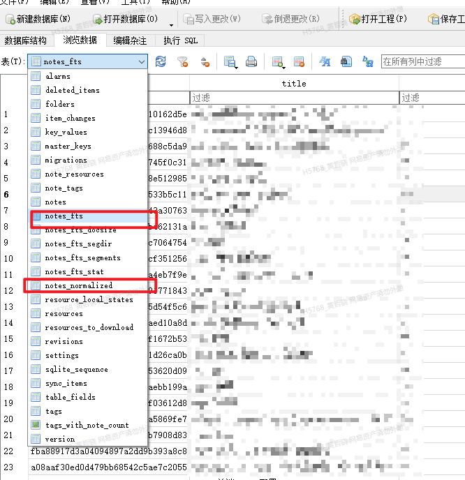

joplin notes_normalized 和note_fts 分析
Contents
在看joplin数据库的时候，发现除了notes表，还有note_fts和notes_normalized 两张表。那么这两张表是干啥的呢？

note_fts表是干啥的
note_fts表是Joplin数据库中的一个全文搜索表，它用于提高搜索性能和准确性。该表包含了笔记的全文本内容和元数据信息，并通过SQLite的全文本搜索（FTS）扩展来支持高效的文本搜索。当用户在Joplin中搜索笔记时，Joplin会使用note_fts表来进行搜索，以便快速找到匹配的笔记。使用note_fts表，Joplin可以更快速地搜索笔记，并提供更准确的搜索结果。
notes_normalized 是干啥用的
notes_normalized是Joplin笔记应用程序中的一个数据库表，用于存储笔记的规范化（normalized）版本。该表的目的是为了提高笔记的搜索性能和准确性。当用户在Joplin中搜索笔记时，Joplin会使用notes_normalized表来进行搜索，以便快速找到匹配的笔记。该表包含了笔记的规范化版本，例如，将所有的字符转换为小写字母、去除标点符号、删除HTML标记等。这样做可以使搜索结果更加准确，因为它可以忽略大小写、标点符号和HTML标记等因素，从而使相似的笔记能够被正确地匹配。使用notes_normalized表，Joplin可以更快速地搜索笔记，并提供更准确的搜索结果。
notes_normalized 和 note_fts 区别是啥
notes_normalized 和 note_fts 都是Joplin笔记应用程序中的数据库表，但它们的作用和用途不同。
notes_normalized表是用于存储笔记的规范化版本的表。该表的目的是为了提高笔记的搜索性能和准确性。在该表中，Joplin会将笔记的所有字符转换为小写字母、去除标点符号、删除HTML标记等，以便在搜索时能够忽略这些因素，从而使相似的笔记能够被正确地匹配。
note_fts表是用于进行全文本搜索的表。该表包含了笔记的全文本内容和元数据信息，并通过SQLite的全文本搜索（FTS）扩展来支持高效的文本搜索。当用户在Joplin中搜索笔记时，Joplin会使用note_fts表来进行搜索，以便快速找到匹配的笔记。
因此，notes_normalized表用于提高搜索性能和准确性，而note_fts表用于进行全文本搜索。两个表都是为了提高Joplin笔记搜索的效率和准确性而创建的，但是它们的实现方法和作用是不同的。
何谓虚拟表
note_fts是Joplin笔记应用程序中的一个虚拟表（virtual table）。虚拟表是SQLite数据库中的一种特殊类型的表，它并不真正存在于数据库中，而是由SQLite在运行时动态生成的。虚拟表可以通过SQLite的模块接口来实现，从而扩展SQLite的功能。在Joplin中，note_fts表是通过SQLite的全文本搜索（FTS）扩展来实现的，它提供了一种高效的全文本搜索功能。在note_fts表中，Joplin会将笔记的全文本内容和元数据信息存储在虚拟表中，并使用SQLite的FTS扩展来支持高效的文本搜索。虚拟表的使用可以带来很多好处，例如更高的性能、更好的内存管理、更灵活的查询等。
所以它是何时生成的？
note_fts表是在Joplin笔记应用程序启动时动态生成的。当Joplin首次启动时，它会检查是否需要创建note_fts表。如果note_fts表不存在，则Joplin会使用SQLite的FTS扩展自动创建note_fts表，并将笔记的全文本内容和元数据信息存储在该表中。创建note_fts表的过程可能需要一些时间，具体取决于笔记的数量和大小。一旦note_fts表被创建，它就会一直存在于数据库中，直到用户删除它或重置Joplin应用程序的数据库。在后续的使用中，当用户进行搜索操作时，Joplin会在note_fts表中进行查询，并返回匹配的笔记结果。由于note_fts表是在运行时动态生成的虚拟表，所以它的创建和使用都是透明的，用户不需要手动操作或干预。
具体实现
我们可以看一下代码。
|
|
它会从数据库中选择所有未加密的笔记，并将它们的内容插入到一个名为 “notes_normalized” 的表中。这个表包含了经过处理和规范化的笔记文本内容，以便于搜索引擎进行索引和查询。
下面是这段代码的大致流程：
从数据库中选择所有未加密的笔记的 ID。
将这些 ID 分成 100 个一组，对每组笔记执行以下操作：
. 从数据库中选择这些笔记的相关字段（例如标题、正文、创建时间等）。
对每个笔记，使用 normalizeNote_ 方法将其内容进行处理和规范化。
将处理后的内容插入到 “notes_normalized” 表中。
更新设置值 “searchEngine.lastProcessedChangeId”，表示索引已经更新到了最新状态。
其中
|
|
继续看
|
|
这段代码是一个 JavaScript 函数，用于从字符串中移除文本中的重音符号（diacritics）。在全文搜索和字符串匹配的场景下，移除重音符号可以提高搜索和匹配的准确度和可靠性。
具体来说，这个函数会遍历一个名为 defaultDiacriticsRemovalMap 的数组，该数组包含了一些常见的重音符号以及它们的基本字符（即不带重音的字符）。然后，对于输入的字符串，函数会将其中所有出现在 defaultDiacriticsRemovalMap 中的重音符号替换为相应的基本字符。
例如，如果输入的字符串为 “café”, 函数会将其替换为 “cafe”。
需要注意的是，这个函数只能移除一些常见的重音符号，因此对于一些少见或非标准的重音符号，可能需要进行额外的处理。同时，移除重音符号也可能导致一些单词或名称失去其原本的拼写和意义，因此需要根据具体场景和需求进行权衡和选择。
Author smasterfree
LastMod 2023-07-05